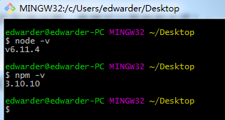
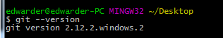
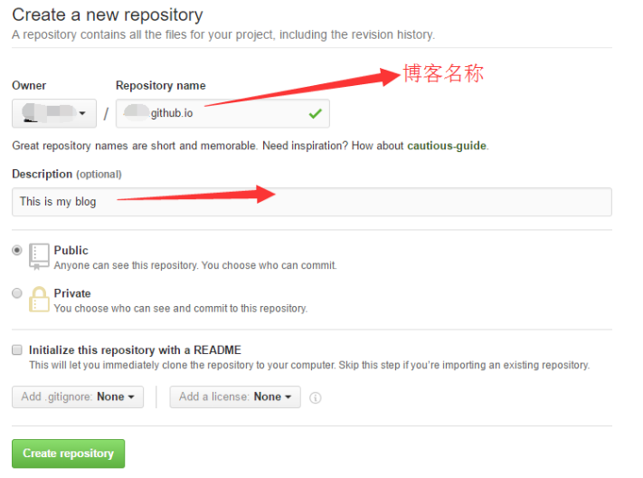
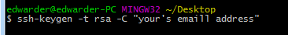
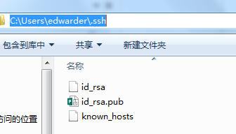
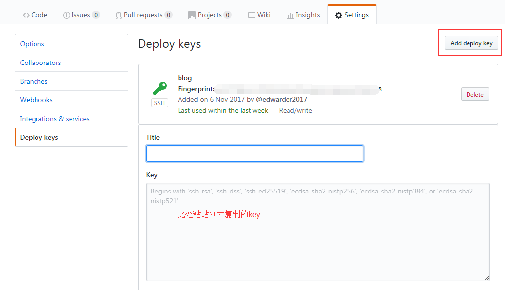
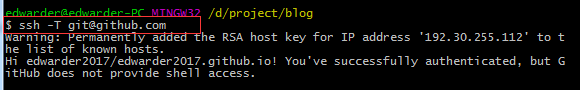
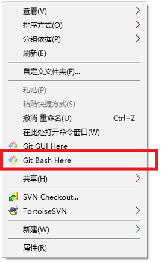
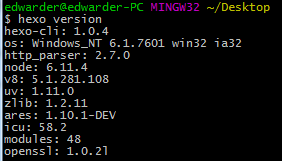
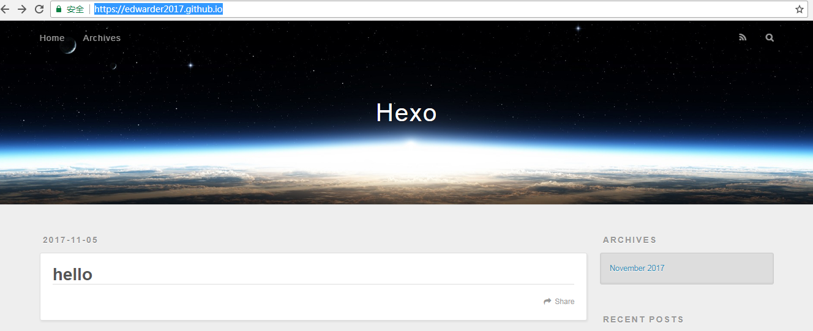

window系统下GitHub+Hexo博客搭建
MarkdownPad is a full-featured Markdown editor for Windows.
01前沿
很多朋友都想试着搭建一个属于自己的技术博客，我在这里为大家介绍一种方法。Hexo是一个快速简洁的博客框架，把代码提交到Github上并且开启Github pages就可以直接访问了。网上的教程也有很多，不过新手在搭建的过程中会遇到很多坑，本文为大家规避了一些诸如“nmp速度慢”、“命令错误”等问题，希望可以帮助到大家！
02安装环境（node和git）
- nodejs官网：https://nodejs.org/zh-cn/
- git官网：https://git-scm.com/
查看node和npm版本号

查看git版本号

配置GitHub
1) 配置仓库)
Github账号注册就跳过了，登陆过后点击new repository，Repository name填写自己的名称 + .github.io

2）配置Github SSH
首先在桌面空白处鼠标右键选择Git Bash Here,在窗口中输入如下命令

双引号中写入自己的邮箱地址，然后回车，会提示你文件保存的路径，这时候按回车键确认，然后会提示你输入密码，输入即可（不输入可以直接回车），然后会确认输入一次，就可以在刚刚的路径看到生成了两个文件，一个是id_rsa，另一个是id_rsa.pub，如图

下一步 用notepadd++打开id_rsa.pub然后选中里面的全部内容，复制下来。
登录github，点击头像可以看到setting选项，点击进入然后可以看到左边有一个Deploy keys选项点击就可以看到以下界面，点击Add deploy key

保存成功后，到此，Github上面的SSH配置就算完成了。
此时我们可以做下简单测试，出现如下提示表明配置成功。

3）创建本地仓库与Github同步
首页创建一个空文件夹，尽量不要使用中文名称作为文件名，进入文件中，右击选择

依次输入以下命令（前面的$符号就不要复制了）
$ git init
$ git config --global user.name "Your's name"
$ git config --global user.email "Your's email address"
其中的Your’s name替换成你的名称，Your’s email address替换成你的邮件地址即可
然后再当前的文件夹下面新建一个README.md文件，然后右键用notepad++打开，随便写入一点内容，做一次简单的提交。
输入以下命令其中的yourname是github账号的名称，每个人是不一样的
git add README.md
git commit -m "first commit"
git remote add origin git@github.com:yourname/yourname.github.io.git
git push -u origin master
这时候进入到github应该就可以看到仓库下面有一个刚刚提交的README.md的文档了。
04安装Hexo
1) 安装工作
在桌面空白处右键打开Git Bash Here，输入如下命令
$ npm install -g hexo-cli
敲完回车可能没有任何提示，请一定要耐心等待。安装成功后，可以输入以下命令测试以下Hexo是否安装成功
$ hexo version
会有如下提示

在磁盘中任意位置创建一个文件夹，比如blog，cd到此目录下，执行如下命令，完成hexo的初始化
$ hexo init
OK，至此安装工作完成。
2）生成静态页面
在上一步的命令后继续输入如下命令
$ hexo generate （或者hexo g）
此时在blog目录下回产生一个public目录。
3）本地调试
启动本地服务，命令如下
$ npm install hexo-server --save
$ hexo server（或者hexo s）
访问http://localhost:4000就可以访问自己的博客主页啦。
05 配置本地仓库
现在我们需要打开_config.yml文件，拉到叶底，添加如下代码
deploy:
type: git
repository: ssh://git@github.com/edwarder2017/edwarder2017.github.io.git
branch: master
注意：:号后面需要有空格！！！
安装hexo的部署插件，命令如下
$ npm install hexo-deployer-git --save
最后执行如下命令，将hexo部署到github中
$ hexo deploy
最后在浏览器中输入：https://edwarder2017.github.io/，就可以看到hexo生成的博客了。
